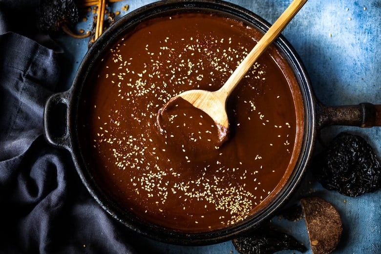

Mole

Description
This mole ranchero sauce is a good version to make with ingredients you can keep on hand.
Serve with a rotisserie chicken or your own cooked chicken to give it an entirely different flavor. You can also round out a simple but special meal with rice or tortillas, plus salad greens, sliced avocado, and chopped tomatoes.
Ingredients
- 2 teaspoons vegetable oil
- 1/4 cup finely chopped onion
- 1 tablespoon unsweetened cocoa powder
- 1 teaspoon ground cumin
- 1 teaspoon dried cilantro
- 1/8 tablespoon dried minced garlic
- 1 (10.75 ounce) can condensed tomato soup
- 1 (4 ounce) can diced green chile peppers
Steps
- Heat oil in a medium saucepan over medium heat. Cook onion in oil until tender. Mix in cocoa powder, cumin, cilantro, and garlic. Stir in tomato soup and green chile peppers.
- Bring sauce to a boil, reduce heat to low, cover, and simmer for 10 minutes.
- Transfer to a gravy boat or pour directly over food to serve.